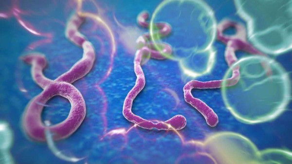

З березня місяця цього року на африканському континенті лютує смертоносний вірус Ебола (Ebola virus). За останніми даними заражено близько 4 тисяч осіб, і більше половини вже померло. Хвороба захопила в свої лещата смерті Гвінею, Ліберії, Нігерії, Сьєрра-Леоне, і схоже, на цьому не зупиниться, з кожним днем фіксуються всі нові випадки зараження. У статті зібрана інформація про збудника цього захворювання, шляхи зараження, симптоми та тих патологічних процесах, які відбуваються в організмі при Лихоманки Ебола. Цей вірус належить до родини филовирусов (єдині представники з усіх видів вірусів мають РНК ланцюжок, і вражаючі приматів). Відомо п'ять підвидів вірусу Ебола, чотири з них небезпечні для людини. Природна середовище існування цього вірусу гризуни, які живуть у лісах екваторіальної Африки
. Симптоми і ознаки вірусу Ебола
Початок вірусу Ебола завжди гостре, миттєво підвищується температура до 39 градусів і вище, до лихоманки приєднуються такі симптоми як:
- Головні болі,
- Болі в м'язах і суглобах,
- Загальна слабкість і нездужання,
- Нудота.
У перші кілька днів з'являються симптоми ангіни:
- Запалені мигдалини,
- З'являються сильні болі при ковтанні,
- Хворі скаржаться на відчуття гострого грудки в горлі.
З ураженням внутрішніх органів приєднуються такі патологічні прояви як:
- Неприборкана блювота,
- Сильні болі в животі,
- Пронос з домішками крові або чорного кольору (мелена),
- З'являються підшкірні крововиливи,
- В блювотних масах видно домішки крові,
Подальший розвиток хвороби може йти двома шляхами. При першому патологічні симптоми вірусу Ебола стихають, і протягом 3х місяців людина поволі одужує. Другий шлях призводить до некрозу тканин і смерті в кінці другого тижня від початку захворювання.
Група ризику
Наявні відомості про хвороби дозволяють припустити, що найбільшому ризику зараження піддаються особи з вираженою недостатністю фолієвої, дефіцитом вітамінів групи «В», і зниженим імунітетом, а так само жінки в період гормональної перебудови (вагітність, початок клімаксу).
Профілактика
Профілактичні заходи від вірусу Ебола включають в себе дотримання всіх заходів безпеки при контакті з інфікованим хворим. Як не парадоксально, але особи, які споживали міцні алкогольні напої, перебуваючи в епіцентрах хвороби, не інфікуються вірусом, на відміну від тих, хто приймав препарати хініну, і все одно захворів.
Джерело: http://diagnoz.net.ua/xvorobu/25483-vrus-ebola-simptomi-prichini.html